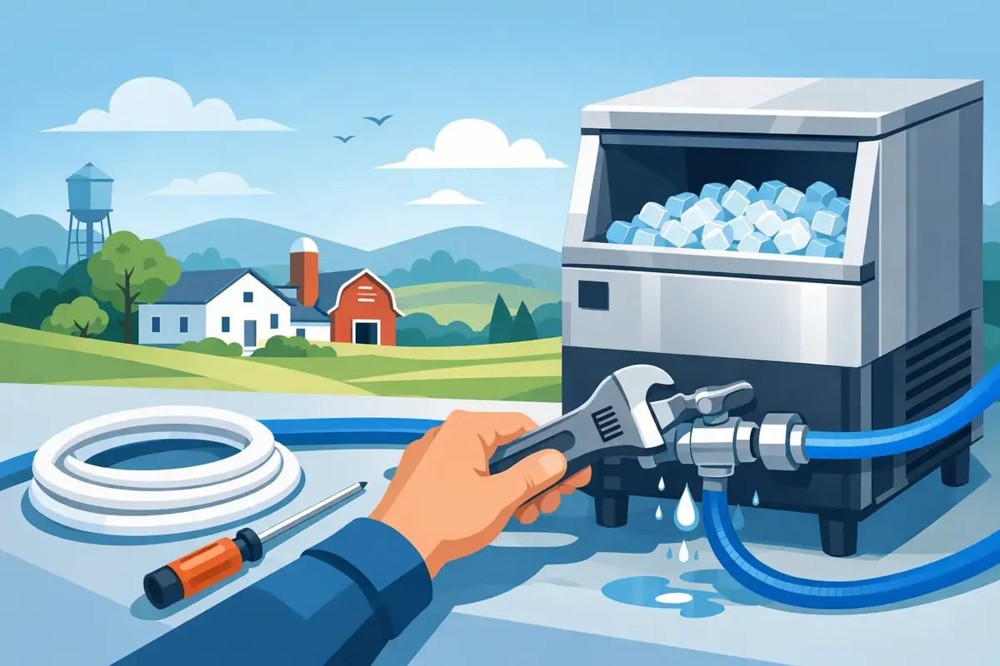

That small puddle beneath the refrigerator can become a much bigger problem by morning. A loose fitting, cracked plastic tube, or failing refrigerator connection can allow water to run quietly behind cabinets and into flooring. For homeowners needing ice maker water line repair in Woodbury, TN, the priority is simple: stop the water, protect the home, and identify whether the problem is at the refrigerator, the shutoff valve, or the line inside the wall.
An ice maker is convenient until it stops making ice, dispenses cloudy cubes, or leaves water where it does not belong. The repair may be straightforward, but guessing can make a minor leak worse. A professional diagnosis helps protect flooring, cabinetry, drywall, and the water supply serving your kitchen.
Signs Your Ice Maker Water Line Needs Attention
A refrigerator water line often gives warning before it fails completely. The most obvious sign is water on the floor behind or beside the appliance, especially after the ice maker cycles. You may also notice a damp, musty smell near the refrigerator, warped flooring, water staining on a nearby wall, or unusually low water flow at the dispenser.
No ice can also point to a supply issue. If the ice maker has power but is producing small cubes, hollow cubes, or no cubes at all, restricted water flow may be the cause. A kinked line behind the refrigerator, a clogged refrigerator filter, a partially closed valve, or a deteriorated supply tube can all reduce pressure.
Some problems are less visible. A slow leak at the refrigerator connection may only drip when the appliance calls for water. A hidden line failure inside a wall or floor may reveal itself through rising water bills, soft baseboards, discoloration, or recurring moisture. Do not ignore those signs simply because the refrigerator still appears to work.
What to Do When You Find a Leak
If water is actively leaking, turn off the refrigerator's water supply valve if you can safely reach it. Many refrigerators have a small shutoff valve behind the appliance, under the kitchen sink, in a basement, or in a nearby utility area. Then unplug the refrigerator if water is near an electrical connection, move towels into place, and avoid pulling the appliance too far forward. Refrigerator doors, flooring, and supply lines can be damaged when a heavy unit is moved abruptly.
Once the water is off, check whether the leak is coming from the refrigerator itself or from the plumbing connection. A loose compression nut at the back of the unit may be visible. So may a split plastic line. However, a visible drip does not always identify the real source. Water can travel along a tube or cabinet edge before it reaches the floor.
If the leak is substantial, the line is inside a wall, or you cannot find a working shutoff valve, professional help is the safest next step. The goal is not merely to get the ice maker running again. It is to prevent hidden water damage and make sure the supply connection is secure.
Common Causes of Refrigerator Water Line Failures
Aging Plastic Tubing
Older refrigerators are often connected with plastic tubing. Over time, that material can become brittle, especially where it bends behind the appliance. A line may crack after the refrigerator is moved for cleaning, new flooring, or another kitchen repair. Replacing old plastic tubing with a properly installed, durable supply line can reduce the chance of another surprise leak.
Loose or Corroded Connections
The connection at the refrigerator, shutoff valve, or water supply tee can loosen with vibration and normal use. In some homes, corrosion around a valve or fitting can make a simple-looking repair more involved. Tightening a fitting without checking the condition of the surrounding connection can temporarily stop a drip while leaving a weak component in place.
A Damaged Shutoff Valve
The shutoff valve is an important part of the system because it allows the refrigerator supply to be isolated without turning off water to the entire home. If the valve will not close, leaks at the refrigerator become more stressful and more difficult to control. A plumber can replace a failed valve and confirm it operates properly before reconnecting the line.
Kinks, Pinches, and Poor Installation
A refrigerator needs enough clearance behind it for the line to bend gently. When a line is pinched against the wall or sharply folded, water flow can suffer and the tubing can weaken. This is common after an appliance is pushed back into place. The right repair includes routing the line so it is protected when the refrigerator moves.
Mineral Buildup or Water Quality Concerns
Low ice production is not always a leak problem. Sediment, mineral buildup, or an overdue refrigerator filter can restrict water flow. If multiple fixtures in the home show signs of hard water, scale, unusual taste, or sediment, the refrigerator may be revealing a larger water-quality concern. The appropriate fix depends on the source of the issue. A new line will not solve a filtration or whole-home water treatment need.
Why Professional Ice Maker Water Line Repair Matters
A refrigerator water line looks small, but it is connected to a pressurized plumbing system. The best repair depends on the line material, the valve condition, the refrigerator connection type, and where the supply line runs. A qualified plumber can locate the source of the leak, replace worn components, install a reliable connection, and test the system while the refrigerator cycles.
This also matters when the line passes through a cabinet, wall, crawl space, or finished floor. A repair that only addresses the visible tubing may leave a hidden leak untreated. When there is evidence of water damage, a plumber can help determine whether the supply line, valve, appliance connection, or another nearby plumbing component is responsible.
For landlords and commercial property managers, prompt repairs are especially valuable. A leaking refrigerator line in a rental home, break room, office kitchen, or staff area can damage finishes and interrupt daily operations. Clear communication, documented repairs, and dependable workmanship help keep a small appliance issue from becoming a property claim.
Repair or Replacement: What Makes Sense?
If the issue is a loose fitting and the line and valve are in good shape, a targeted repair may be all that is needed. If the tubing is old, brittle, kinked, or has leaked before, replacement is usually the wiser investment. The same is true when a shutoff valve does not close fully or shows corrosion.
Homeowners sometimes choose the least expensive immediate fix, only to face another leak months later. Upgrading the full accessible supply connection can provide better peace of mind, particularly when the refrigerator sits on hardwood, laminate, or other water-sensitive flooring. The practical choice depends on the age of the materials, the location of the line, and whether there are signs of broader damage.
Preventing the Next Refrigerator Line Leak
Pull the refrigerator out carefully when cleaning behind it and avoid forcing it back against the wall. Replace refrigerator water filters on the manufacturer's schedule, and periodically look behind the appliance for dampness, rust, or a pinched line. It is also wise to know where the refrigerator shutoff valve is and test it occasionally, provided it can be done without forcing a stuck valve.
If your home has experienced unexplained leaks or you are away often, smart water shutoff technology may be worth considering. These systems can alert homeowners to abnormal water use and, depending on the setup, help limit damage from certain leaks. They are not a substitute for a sound refrigerator connection, but they can add another layer of protection.
Angle Stop Plumbing brings veteran-owned professionalism, respectful service, upfront pricing, and a No Foul Language Guarantee to plumbing repairs that affect your family's home. When an ice maker line is leaking, making weak ice, or refusing to work, a careful inspection can bring clarity without the hassle.
A dry kitchen floor and a dependable ice maker should not require guesswork. Address the small drip now, before it has time to reach the spaces you cannot see.